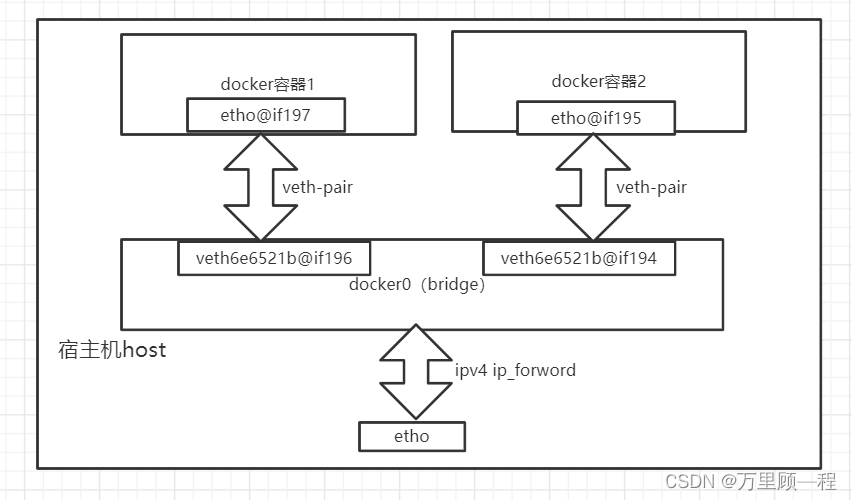
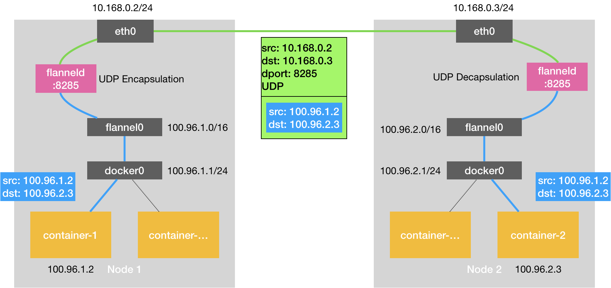
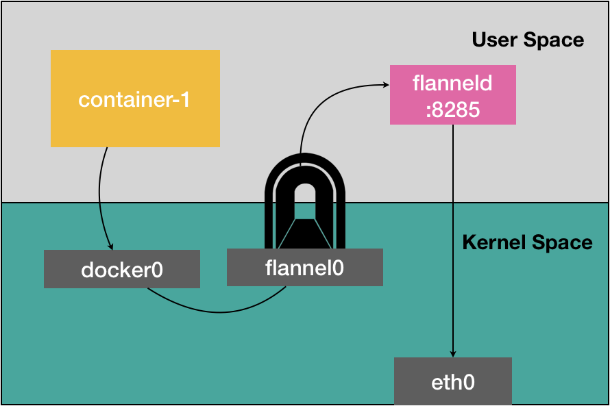
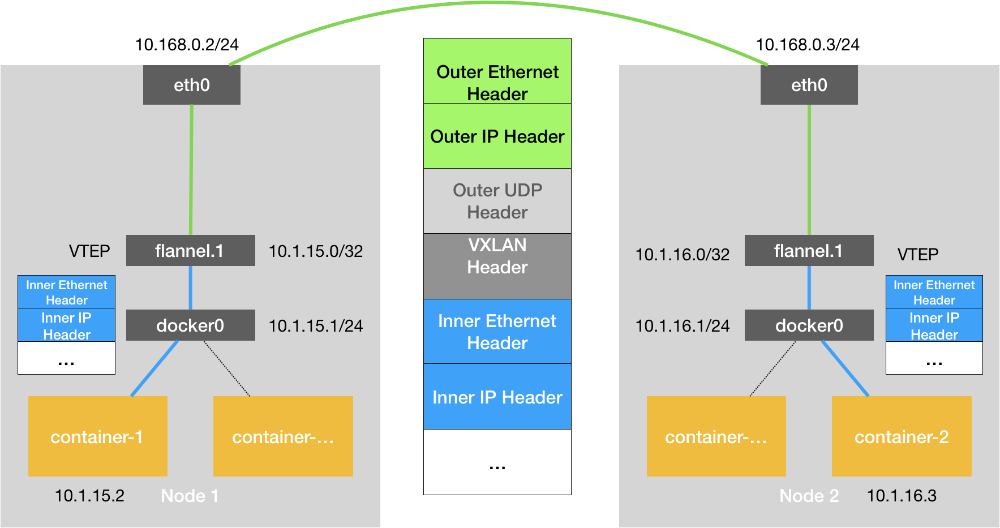
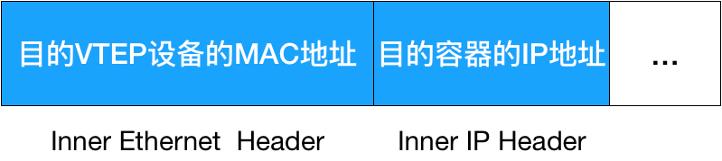
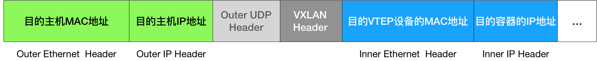
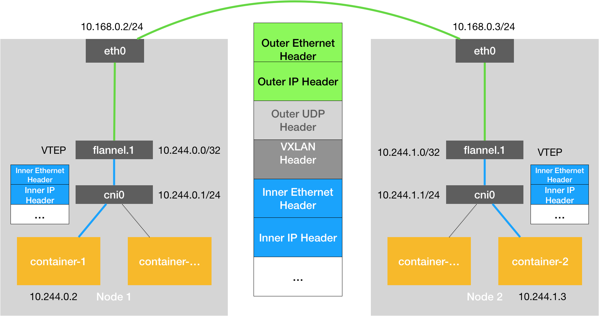
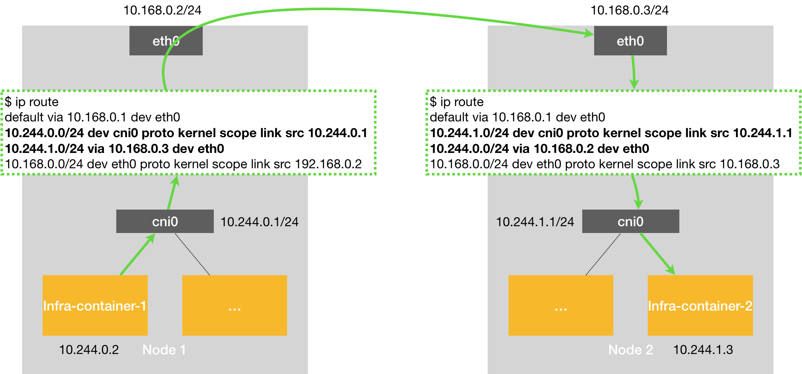

理解k8s容器网络
本文最后更新于：2023年8月4日 上午
理解k8s容器网络
docker实现容器通信原理
- Docker 项目会默认在宿主机上创建一个名叫 docker0 的网桥，凡是连接在 docker0 网桥上的容器，就可以通过它来进行通信。把这些容器“连接”到 docker0 网桥上需要使用一种名叫Veth Pair的虚拟设备了。Veth Pair 常常被用作连接不同 Network Namespace 的“网线”。
- Veth Pair 设备的特点是：它被创建出来后，总是以两张虚拟网卡（Veth Peer）的形式成对出现的。并且，从其中一个“网卡”发出的数据包，可以直接出现在与它对应的另一张“网卡”上，哪怕这两个“网卡”在不同的 Network Namespace 里。
单主机容器通讯原理

如上图：同一宿主机上，容器之间都是连接到docker0这个网桥上的，docker0可以作为虚拟交换机（或路由器）使容器可以相互通信
跨主机网络的实现
要理解容器『跨主通信』的原理，就一定要先从 Flannel 这个项目说起。目前，Flannel 支持三种后端实现，分别是：VXLAN、host-gw、UDP（弃用）
UDP模式理解容器网络
两台宿主机。
宿主机 Node 1 上有一个容器 container-1，它的 IP 地址是 100.96.1.2，对应的 docker0 网桥的地址是：100.96.1.1/24。
宿主机 Node 2 上有一个容器 container-2，它的 IP 地址是 100.96.2.3，对应的 docker0 网桥的地址是：100.96.2.1/24。

container-1 访问 container-2：
- container-1 容器里的进程发起的 IP 包，其源地址就是 100.96.1.2，目的地址就是 100.96.2.3。由于目的地址 100.96.2.3 并不在 Node 1 的 docker0 网桥的网段里，所以这个 IP 包会被交给默认路由规则，通过容器的网关进入 docker0 网桥（如果是同一台宿主机上的容器间通信，走的是直连规则），从而出现在宿主机上。
- 这时候，这个 IP 包的下一个目的地，就取决于宿主机上的路由规则了。此时，Flannel 已经在宿主机上创建出了一系列的路由规则，以 Node 1 为例，如下所示：
在 Node 1 上
$ ip route
default via 10.168.0.1 dev eth0
100.96.0.0/16 dev flannel0 proto kernel scope link src 100.96.1.0
100.96.1.0/24 dev docker0 proto kernel scope link src 100.96.1.1
10.168.0.0/24 dev eth0 proto kernel scope link src 10.168.0.2 - 由于我们的 IP 包的目的地址是 100.96.2.3，它匹配不到本机 docker0 网桥对应的 100.96.1.0/24 网段，只能匹配到第1条、也就是 100.96.0.0/16 对应的这条路由规则，从而进入到一个叫作 flannel0 的设备中
- flannel0 有个设备叫做TUN 设备（Tunnel 设备），TUN 设备是一种工作在三层（Network Layer）的虚拟网络设备。TUN 设备的功能非常简单，即：在操作系统内核和用户应用程序之间传递 IP 包。 当操作系统将一个 IP 包发送给 flannel0 设备之后，flannel0 就会把这个 IP 包，交给创建这个设备的应用程序，也就是 Flannel 进程。这是一个从内核态（Linux 操作系统）向用户态（Flannel 进程）的流动方向。

可以看到：
第一次：用户态的容器进程发出的 IP 包经过 docker0 网桥进入内核态；
第二次：IP 包根据路由表进入 TUN（flannel0）设备，从而回到用户态的 flanneld 进程；
第三次：flanneld 进行 UDP 封包之后重新进入内核态，将 UDP 包通过宿主机的 eth0 发出去。
反之，如果 Flannel 进程向 flannel0 设备发送了一个 IP 包，那么这个 IP 包就会出现在宿主机网络栈中，然后根据宿主机的路由表进行下一步处理。这是一个从用户态向内核态的流动方向。所以，当 IP 包从容器经过 docker0 出现在宿主机，然后又根据路由表进入 flannel0 设备后，宿主机上的 flanneld 进程（Flannel 项目在每个宿主机上的主进程），就会收到这个 IP 包。然后，flanneld 看到了这个 IP 包的目的地址，是 100.96.2.3，就把它发送给了 Node 2 宿主机。
确定IP地址对应的容器，是运行在 Node 2 上，因为由 Flannel 管理的容器网络里，一台宿主机上的所有容器，都属于该宿主机被分配的一个“子网” ，IP地址对应的容器，是运行在 Node 2 上的
子网与宿主机的对应关系，正是保存在 Etcd 当中，如下所示：
$ etcdctl ls /coreos.com/network/subnets
/coreos.com/network/subnets/100.96.1.0-24
/coreos.com/network/subnets/100.96.2.0-24
/coreos.com/network/subnets/100.96.3.0-24这个请求得完成的原因：每台宿主机上的 flanneld，都监听着一个 8285 端口，所以 flanneld 只要把 UDP 包发往 Node 2 的 8285 端口即可。flanneld 会直接把这个 IP 包发送给它所管理的 TUN 设备，即 flannel0 设备。Linux 内核网络栈就会负责处理这个 IP 包，具体的处理方法，就是通过本机的路由表来寻找这个 IP 包的下一步流向。
NNode 2 上的路由表，跟 Node 1 非常类似，如下所示：
在 Node 2 上
$ ip route
default via 10.168.0.1 dev eth0
100.96.0.0/16 dev flannel0 proto kernel scope link src 100.96.2.0
100.96.2.0/24 dev docker0 proto kernel scope link src 100.96.2.1
10.168.0.0/24 dev eth0 proto kernel scope link src 10.168.0.3
这个 IP 包的目的地址是 100.96.2.3，它跟第2条、也就是 100.96.2.0/24 网段对应的路由规则匹配更加精确。所以，Linux 内核就会按照这条路由规则，把这个 IP 包转发给 docker0 网桥。docker0 网桥的地址范围必须是 Flannel 为宿主机分配的子网。这个很容易实现，以 Node 1 为例，你只需要给它上面的 Docker Daemon 启动时配置如下所示的 bip 参数即可：
$ FLANNEL_SUBNET=100.96.1.1/24
$ dockerd –bip=$FLANNEL_SUBNET …Flannel 进行 UDP 封装（Encapsulation）和解封装（Decapsulation）的过程，也都是在用户态完成的。在 Linux 操作系统中，上述这些上下文切换和用户态操作的代价其实是比较高的，这也正是造成 Flannel UDP 模式性能不好的主要原因。
Flannel UDP 模式提供的其实是一个三层的 Overlay 网络，即：它首先对发出端的 IP 包进行 UDP 封装，然后在接收端进行解封装拿到原始的 IP 包，进而把这个 IP 包转发给目标容器。这就好比，Flannel 在不同宿主机上的两个容器之间打通了一条“隧道”，使得这两个容器可以直接使用 IP 地址进行通信，而无需关心容器和宿主机的分布情况。
所以说，我们在进行系统级编程的时候，有一个非常重要的优化原则，就是要减少用户态到内核态的切换次数，并且把核心的处理逻辑都放在内核态进行。这也是为什么，Flannel 后来支持的VXLAN 模式，逐渐成为了主流的容器网络方案的原因。
VXLAN模式
- VXLAN，即 Virtual Extensible LAN（虚拟可扩展局域网），是 Linux 内核本身就支持的一种网络虚似化技术。所以说，VXLAN 可以完全在内核态实现上述封装和解封装的工作，通过“隧道”机制，构建出覆盖网络（Overlay Network）
- 需要在已有的宿主机网络上，再通过软件构建一个覆盖在已有宿主机网络之上的、可以把所有容器连通在一起的虚拟网络。所以，这种技术就被称为：Overlay Network（覆盖网络）。
- 网络插件flannel：网络插件真正要做的事情，把不同宿主机上的特殊设备连通，从而达到容器跨主机通信的目的。
- VXLAN是Flannel默认和推荐的模式。当我们使用默认配置安装Flannel时，它会为每个节点分配一个24位子网，并在每个节点上创建两张虚机网卡： cni0 和 flannel.1 。 cni0 是一个网桥设备，类似于 docker0 ，节点上所有的Pod都通过veth pair的形式与 cni0 相连。 flannel.1 则是一个VXLAN类型的设备，充当VTEP的角色，实现对VXLAN报文的封包解包。
Flannel VXLAN 模式的工作原理:实现不同主机上容器之间的通讯

图中每台宿主机上名叫 flannel.1 的设备，就是 VXLAN 所需的 VTEP 设备，它既有 IP 地址，也有 MAC 地址
流程描述：
- 当 Node 2 启动并加入 Flannel 网络之后，在 Node 1（以及所有其他节点）上，flanneld 就会添加一条如下所示的路由规则：
1
2
3
4
5
6$ route -n
Kernel IP routing table
Destination Gateway Genmask Flags Metric Ref Use Iface
10.1.16.0 10.1.16.0 255.255.255.0 UG 0 0 0 flannel.1
这条规则：
凡是发往10.1.16.0/24网段的IP包,都需要经过flannel.1设备发出,它最后被发往的网关地址是：10.1.16.0。 - flanneld 又是如何知道这个 IP 地址对应的容器，是运行在 Node2 上的呢？
Flannel项目里一个非常重要的概念：子网（Subnet）事实上，在由 Flannel 管理的容器网络里，一台宿主机上的所有容器，都属于该宿主机被分配的一个『子网』。在上面的例子中，Node1 的子网是 10.1.15.0/24，container-1 的 IP 地址是 10.1.15.2，Node2 的子网是 10.1.16.0/24，container-2 的IP地址是 10.1.16.3。Flannel VXLAN 模式的流程图中可以看到，10.1.16.0 正是 Node 2 上的 VTEP 设备（也就是 flannel.1 设备）的 IP 地址。 - 把 Node 1 和 Node 2 上的 flannel.1 设备分别称为“源 VTEP 设备”和“目的 VTEP 设备，这些 VTEP 设备之间，就需要想办法组成一个虚拟的二层网络，即：通过二层数据帧进行通信。源 VTEP 设备”收到“原始 IP 包”后，就要想办法把“原始 IP 包”加上一个目的 MAC 地址，封装成一个二层数据帧，然后发送给“目的 VTEP 设备”（当然，这么做还是因为这个 IP 包的目的地址不是本机）。要根据三层 IP 地址查询对应的二层 MAC 地址，这正是 ARP（Address Resolution Protocol ）表的功能。
而这里要用到的 ARP 记录，也是 flanneld 进程在 Node 2 节点启动时，自动添加在 Node 1 上的。我们可以通过 ip 命令看到它，如下所示：
1 | |
每台节点启动时都会把VTEP设备对应的 ARP 记录，直接下放到其他每台宿主机上。
4.Linux 内核就可以开始二层封包工作了。这个二层帧的格式，如下所示：

上图Flannel VXLAN 模式的内部帧
可以看到，Linux 内核会把“目的 VTEP 设备”的 MAC 地址，填写在图中的 Inner Ethernet Header 字段，得到一个二层数据帧。
需要注意的是，上述封包过程只是加一个二层头，不会改变“原始 IP 包”的内容。所以图中的 Inner IP Header 字段，依然是 container-2 的 IP 地址，即 10.1.16.3。
5. 这些 VTEP 设备的 MAC 地址，对于宿主机本身没有什么意义，并不能在我们的宿主机二层网络里传输，Linux 内核还需要再把“内部数据帧”进一步封装成为宿主机网络里的一个普通的数据帧，好让它“载着”“内部数据帧”，通过宿主机的 eth0 网卡进行传输。
6. 为了实现这个“搭便车”的机制，Linux 内核会在“内部数据帧”前面，加上一个特殊的 VXLAN 头，用来表示这个“乘客”实际上是一个 VXLAN 要使用的数据帧。而这个 VXLAN 头里有一个重要的标志叫作VNI，它是 VTEP 设备识别某个数据帧是不是应该归自己处理的重要标识。而在 Flannel 中，VNI 的默认值是 1，这也是为何，宿主机上的 VTEP 设备都叫作 flannel.1 的原因，这里的“1”，其实就是 VNI 的值。
7. 然后，Linux 内核会把这个数据帧封装进一个 UDP 包里发出去。这个 UDP 包里面，其实是一个完整的二层数据帧，在宿主机看来，它会以为自己的 flannel.1 设备只是在向另外一台宿主机的 flannel.1 设备，发起了一次普通的 UDP 链接
8. 一个 flannel.1 设备只知道另一端的 flannel.1 设备的 MAC 地址，却不知道对应的宿主机地址是什么？
这种场景下，flannel.1 设备实际上要扮演一个“网桥”的角色，在二层网络进行 UDP 包的转发。在 Linux 内核里面，“网桥”设备进行转发的依据，来自于FDB（Forwarding Database）的转发数据库。这个 flannel.1“网桥”对应的 FDB 信息，也是 flanneld 进程负责维护的。它的内容可以通过 bridge fdb 命令查看到，如下所示：
1 | |
可以看到，在上面这条 FDB 记录里，指定了这样一条规则，即：
发往我们前面提到的“目的 VTEP 设备”（MAC 地址是 5e:f8:4f:00:e3:37）的二层数据帧，应该通过 flannel.1 设备，发往 IP 地址为 10.168.0.3 的主机。显然，这台主机正是 Node 2，UDP 包要发往的目的地就找到了。
9. 接下来的流程，就是一个正常的、宿主机网络上的封包工作。UDP 包是一个四层数据包，所以 Linux 内核会在它前面加上一个 IP 头，即原理图中的 Outer IP Header，组成一个 IP 包。并且，在这个 IP 头里，会填上前面通过 FDB 查询出来的目的主机的 IP 地址，即 Node 2 的 IP 地址 10.168.0.3。然后，Linux 内核再在这个 IP 包前面加上二层数据帧头，即原理图中的 Outer Ethernet Header，并把 Node 2 的 MAC 地址填进去。这个 MAC 地址本身，是 Node 1 的 ARP 表要学习的内容，无需 Flannel 维护。这时候，我们封装出来的“外部数据帧”的格式，如下所示：

上图Flannel VXLAN 模式的外部帧，这样，封包工作就宣告完成了。
接下来，Node 1 上的 flannel.1 设备就可以把这个数据帧从 Node 1 的 eth0 网卡发出去。显然，这个帧会经过宿主机网络来到 Node 2 的 eth0 网卡。
这时候，Node 2 的内核网络栈会发现这个数据帧里有 VXLAN Header，并且 VNI=1。所以 Linux 内核会对它进行拆包，拿到里面的内部数据帧，然后根据 VNI 的值，把它交给 Node 2 上的 flannel.1 设备。而 flannel.1 设备则会进一步拆包，取出“原始 IP 包”。接下来就到了单机容器网络的处理流程。最终，IP 包就进入到了 container-2 容器的 Network Namespace 里。
Kubernetes网络模型与CNI网络插件
Kubernetes 之所以要设置这样一个与 docker0 网桥功能几乎一样的 CNI 网桥，主要原因包括两个方面：
- Kubernetes 项目并没有使用 Docker 的网络模型（CNM），所以它并不希望、也不具备配置 docker0 网桥的能力；
- 这还与 Kubernetes 如何配置 Pod，也就是 Infra 容器的 Network Namespace 密切相关。
Kubernetes 是通过一个叫作 CNI 的接口，维护了一个单独的网桥来代替 docker0。这个网桥的名字就叫作：CNI 网桥，它在宿主机上的设备名称默认是：cni0。
CNI 的设计思想，就是：Kubernetes 在启动 Infra 容器之后，就可以直接调用 CNI 网络插件，为这个 Infra 容器的 Network Namespace，配置符合预期的网络栈.
如下图所示：docker0替换成cni0

大致概括一下整个过程：
发送端：在Pod中发起 ping ，ICMP 报文经过 cni0 网桥后交由 flannel.1 设备处理。 flannel.1 设备是一个VXLAN类型的设备，负责VXLAN封包解包。 因此，在发送端，flannel.1 将原始L2报文封装成VXLAN UDP报文，然后从 eth0 发送。
接收端：Node2收到UDP报文，发现是一个VXLAN类型报文，交由 flannel.1 进行解包。根据解包后得到的原始报文中的目的IP，将原始报文经由 cni0 网桥发送给Pod。
因为我们的 IP 包的目的 IP 地址是 10.244.1.3，所以它只能匹配到第二条规则，也就是 10.244.1.0 对应的这条路由规则。
1 | |
理解所谓的“Kubernetes 网络模型”:
所有容器都可以直接使用 IP 地址与其他容器通信，而无需使用 NAT。
所有宿主机都可以直接使用 IP 地址与所有容器通信，而无需使用 NAT。反之亦然。
容器自己“看到”的自己的 IP 地址，和别人（宿主机或者容器）看到的地址是完全一样的。
Kubernetes三层网络方案
典型例子，莫过于 Flannel 的 host-gw 模式和 Calico 项目了
Flannel 的 host-gw 模式。

要求所有宿主机都在一个局域网内，跨局域网无法进行路由.
host-gw 模式的工作原理，其实就是将每个 Flannel 子网（Flannel Subnet，比如：10.244.1.0/24）的“下一跳”，设置成了该子网对应的宿主机的 IP 地址。这台“主机”（Host）会充当这条容器通信路径里的“网关”（Gateway）。这也正是“host-gw”的含义。
在host-gw模式下，由于不涉及VXLAN的封包解包，不再需要flannel.1虚机网卡。 flanneld 负责为各节点设置路由 ，将对应节点Pod子网的下一跳地址指向对应的节点的ip
host-gw 模式能够正常工作的核心，就在于 IP 包在封装成帧发送出去的时候，会使用路由表里的“下一跳”来设置目的 MAC 地址。这样，它就会经过二层网络到达目的宿主机。所以说，Flannel host-gw 模式必须要求集群宿主机之间是二层连通的。
三层和隧道的异同
相同之处是都实现了跨主机容器的三层互通，而且都是通过对目的 MAC 地址的操作来实现的；不同之处是三层通过配置下一条主机的路由规则来实现互通，隧道则是通过通过在 IP 包外再封装一层 MAC 包头来实现。
三层的优点：少了封包和解包的过程，性能肯定是更高的。
三层的缺点：需要自己想办法维护路由规则。
隧道的优点：简单，原因是大部分工作都是由 Linux 内核的模块实现了，应用层面工作量较少。